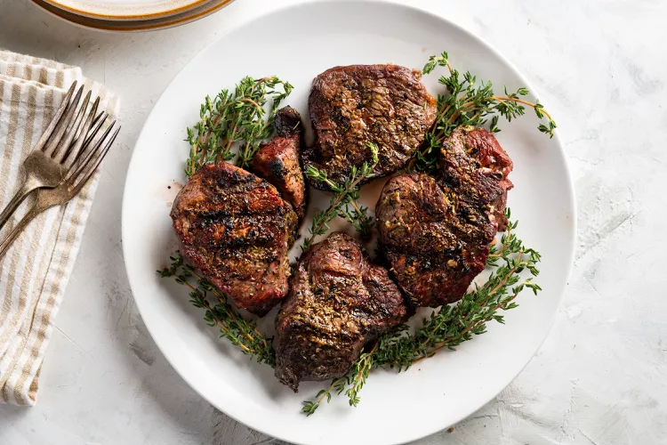

Herb-Crusted Filet Mignon Recipe

What can be better than filet mignon? It's both delicious and tender.
This herb-crusted filet mignon recipe marinates the steak in olive oil, minced garlic,
and an array of herbs including rosemary, thyme, and marjoram, and then it's grilled to perfection.
The result? A mouthwatering, tender, juicy, melt in your mouth, crusted filet mignon.
It's a superb dish to serve for a special occasion from Valentine's Day, birthday, or holiday.
Ingredients
- 1/4 cup olive oil
- 2 cloves garlic, minced
- 12 ounces filet mignon, about 1 1/2 inches thick
- 1 teaspoon dried rosemary
- 1 teaspoon dried thyme
- 1 teaspoon dried marjoram
- 1 teaspoon salt
- 1 teaspoon freshly ground black pepper
Steps
- Gather the ingredients.
- In a covered microwave-safe bowl, heat the olive oil and garlic in the microwave for 50 to 60 seconds. Remove and allow to cool.
- Add the rosemary, thyme, and marjoram, and stir. Let sit for 5 minutes.
- Place the filet mignon into a shallow glass dish.
- Pour the herb mixture over the steaks, turning them over to coat evenly. Cover and let marinate for 2 to 4 hours in the refrigerator.
- Preheat the grill for high heat. Right before placing steaks on the grill, oil the grate with a long pair of tongs,
folded paper towels, and oil. Make 3 to 4 passes on the grate.
- Remove the steaks from the fridge, and season both sides with salt and pepper.
- Place the steaks on the grill and cook for 5 to 6 minutes per side, or to the desired doneness.
- Remove steaks from the heat and let rest for at least 5 minutes.
Return to Main Page